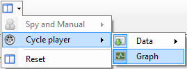

Click ‘Cycle player’  menu to get layout commands of this mode.
menu to get layout commands of this mode.

The ‘Cycle player menu is divided in two parts:
 Data: Showing or hiding the ‘Data’ section of the cycle panel.
Data: Showing or hiding the ‘Data’ section of the cycle panel.
 Graph: Showing or hiding the ‘Graphic trace’ section cycle.
Graph: Showing or hiding the ‘Graphic trace’ section cycle.
Then, ‘Data’ sub-menu is split in two parts

 Engineering messages: Showing or hiding the ‘Engineering’ section of the data reception panel.
Engineering messages: Showing or hiding the ‘Engineering’ section of the data reception panel.
 Raw messages: Showing or hiding the ‘Raw data section of the data reception panel.
Raw messages: Showing or hiding the ‘Raw data section of the data reception panel.
Created with the Personal Edition of HelpNDoc: Free PDF documentation generator